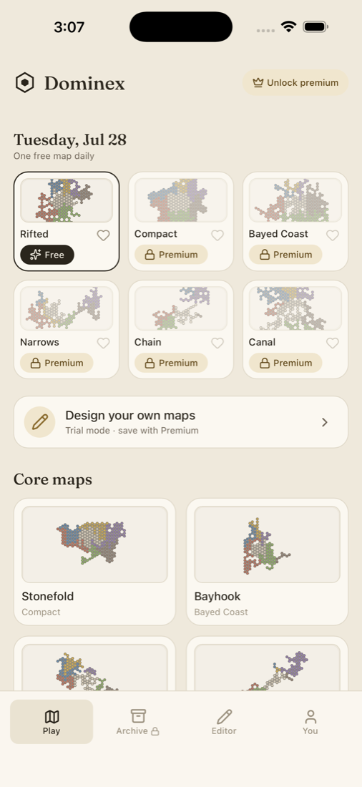

Capture land
Every hex you take earns income each round. More land means more gold — until your borders stretch further than your army can hold.
Single-player hex strategy
Take command of a small kingdom and turn it into the last power standing. Capture land, join territories, strengthen your army, and balance every expansion against its upkeep — on a fresh map every day.

How it plays
Six kingdoms enter. Only one controls the board. The rules fit on a card — the decisions do not.
Every hex you take earns income each round. More land means more gold — until your borders stretch further than your army can hold.
Connected territories share a treasury. Link them to combine their strength — but remember, a rich kingdom can still fall at its weakest border.
Combine villagers into spearmen, knights, and barons. Stronger units win more ground — and cost more to keep. Castles and capitals hold the line while you press forward.
Balance expansion against upkeep. Let a kingdom go broke and the land remembers: trees spread across neglected ground, and graves stand where armies fell.
Win by eliminating every rival or controlling all land — and think it through first: undo and redo are yours until you end the turn.
Maps
Distinct coastlines, chokepoints, chains, rifts, and canals — each shape asks for a different opening, and a different kind of nerve.
Six curated battlefields, each with its own strategic shape and a plan to rethink.
A fresh set of kingdoms rises daily, from compact clashes to sprawling canals and narrow crossings.
Your daily conquest is ready — come back for a new challenge without committing to Premium.
Find your footing on Casual, then replay the same board and test your rule against Legend.
Designed around the player
No matchmaking, no turn timers, no coordinating schedules. Every map is a lively six-faction contest that starts the moment you do.
Games save automatically on your device and resume in one tap. Step away when you need to — your kingdom will be waiting.
Undo and redo freely during your turn. Recover from a mis-tap, explore an alternative, and commit when you are ready.
A guided first game teaches by doing, one decision at a time, and the full rules reference is always a tap away.
Touch-first controls with pan and pinch-to-zoom keep the full board comfortable on a phone or tablet. Mouse and scroll support desktop play.
Install Dominex as a full-screen app and keep playing away from a connection once it has been installed and cached.
A quiet ink-and-parchment interface with compact controls keeps attention on the board, and follows your device between light and dark.
Player labels, shape-based cues, and a high-distinction palette mean ownership and legal moves never depend on color alone. Haptic feedback lands quietly on supported iOS devices.
No account setup required. Saved matches, favorites, preferences, and custom maps stay on your device.
Questions
No — Dominex is single-player by design. You face five AI rivals across four difficulty levels, from Casual to Legend, so every map is a full six-faction contest with no matchmaking and no waiting for another turn.
No. Open the board and play. Saved matches, favorites, preferences, and custom maps are stored locally on your device.
Yes, after installing. Add Dominex to your home screen as a full-screen web app; once it has been installed and cached, you can play away from a connection.
Undo and redo are available throughout your turn, so you can recover a slip or explore a different line before committing. Once you end the turn, the move stands.
Premium is a single lifetime purchase — no subscription. The current price is shown in the iOS app, where the purchase is completed.
Yes, with Premium. The built-in editor lets you draw a 35 × 24 battlefield from scratch or start from an existing map, with validation and preview as you work — then play your creation against the same five rivals.
A new set of kingdoms rises every day. Six enter. One controls the board.
Play Dominex